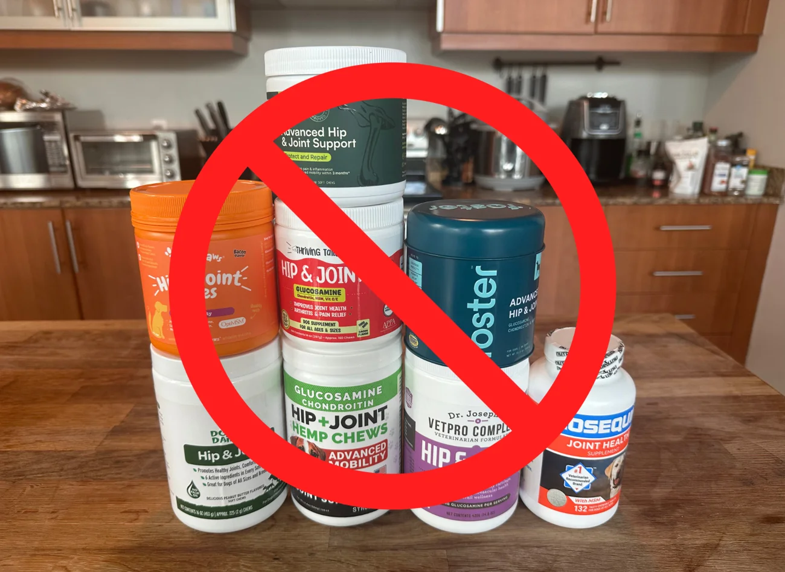
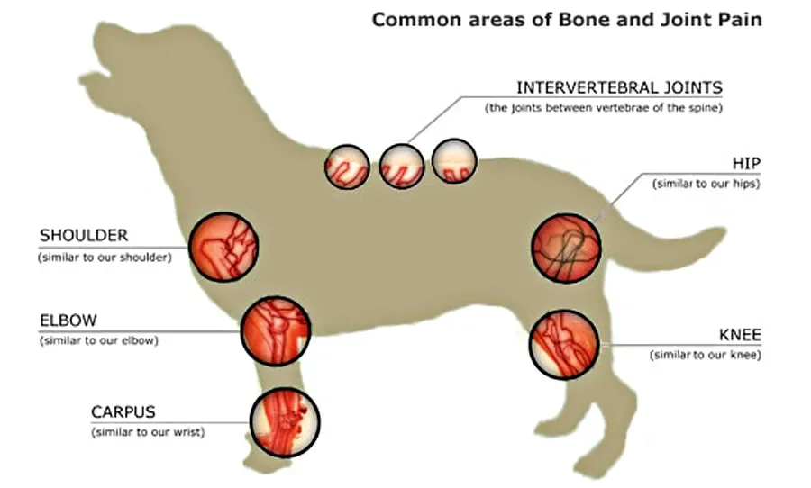
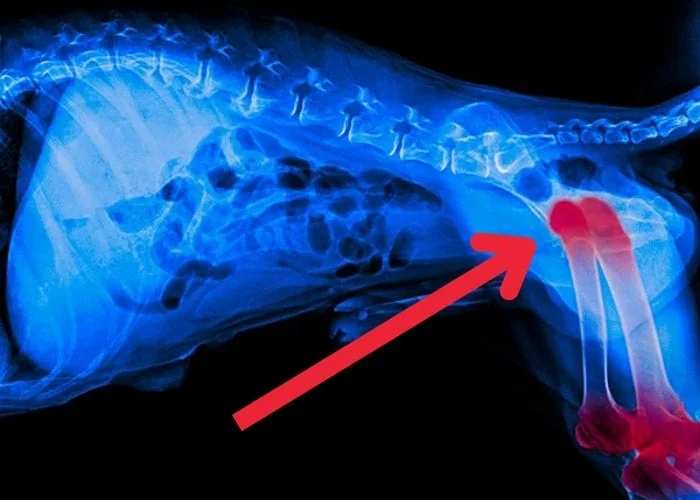
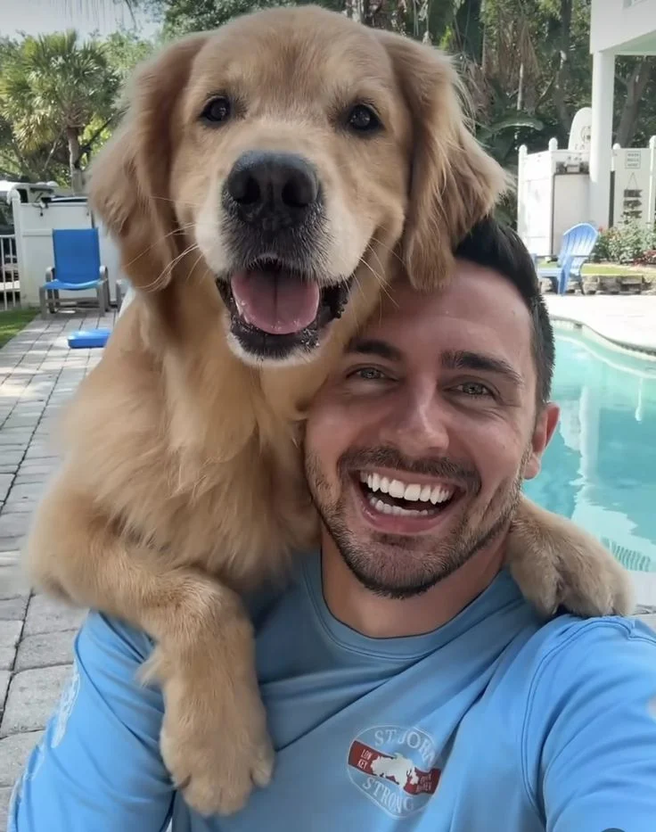
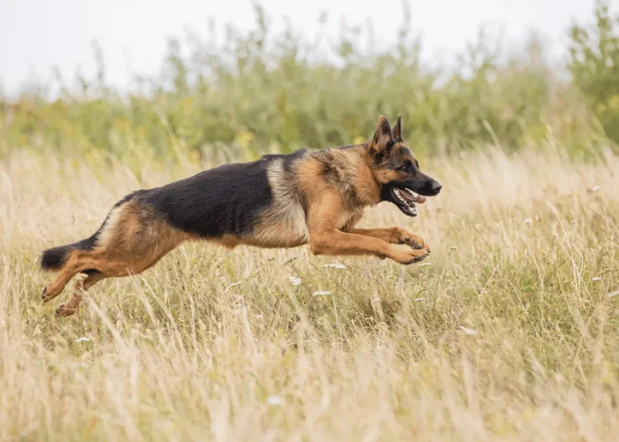
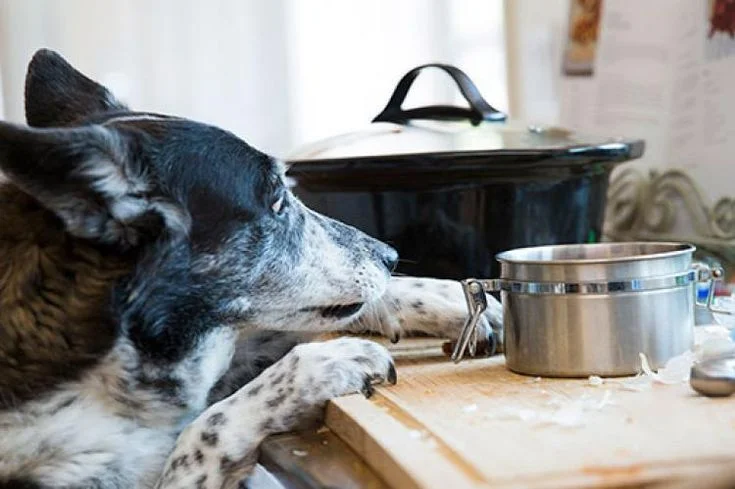
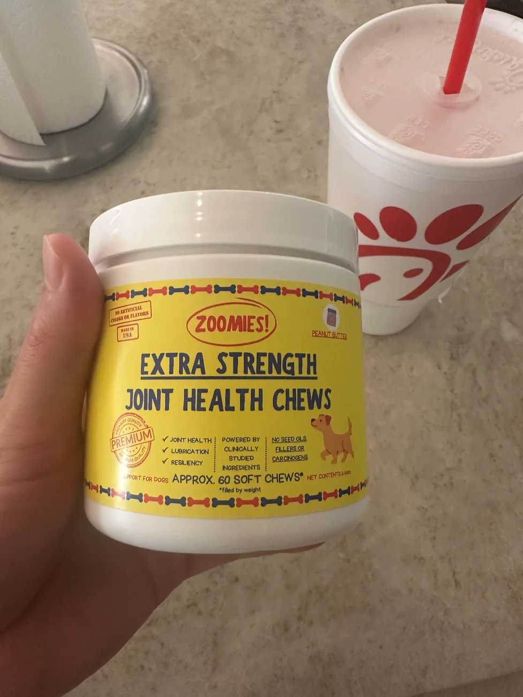
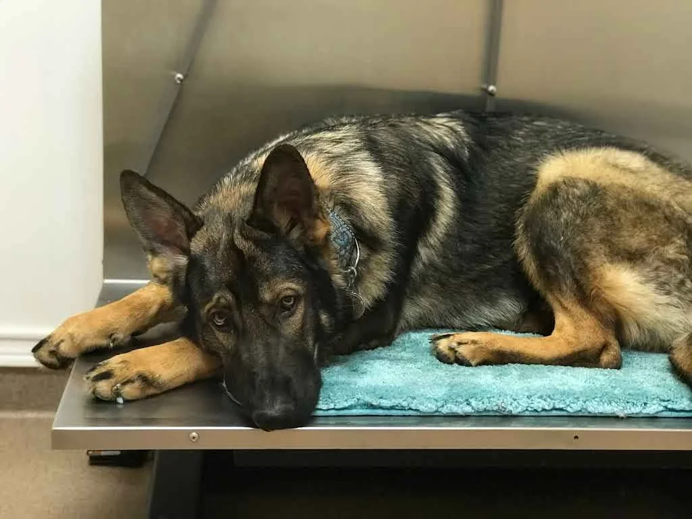
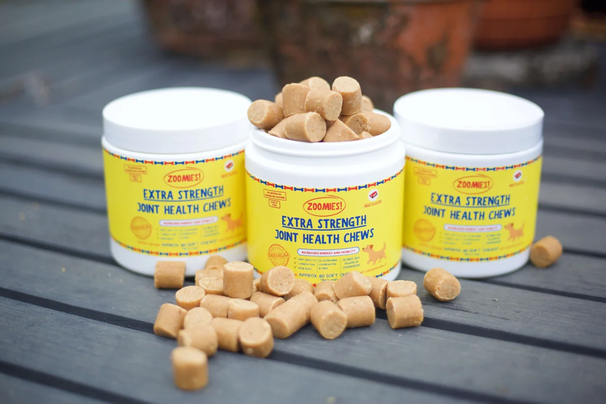
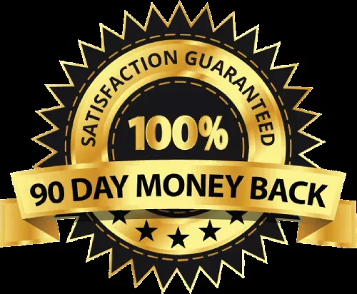

What I uncovered after 4 wasted joint supplements — why 95% of big-brand chews are just recycled, low-grade powders that keep your dog in pain, and the 3-compound clinical breakthrough that rebuilt his cartilage cushion in under 30 days.
The first time a stranger at the park asked, "How old is your puppy?" I had to turn away so they wouldn’t see the tears in my eyes.
My Golden Retriever is 12 years old.
Not 2.
Not 4.
Twelve.
Just six weeks earlier, he was living in a quiet, agonizing hell.
He was sleeping 18 hours a day on his orthopedic rug. He stopped meeting me at the front door. Every time he tried to push his back legs off the hardwood floor, his hindquarters would quiver violently before his paws slipped out from under him.
He looked at the staircase like it was a sheer mountain cliff.
And worst of all... the tennis ball.
For a decade, that neon green ball was his entire world. But over the last year, whenever I rolled it across the living room carpet, he wouldn't even budge. He would just rest his chin on his paws and follow the ball with these hollow, apologetic eyes that broke my heart into a million pieces.
That look said: "I want to chase it so badly, Mom... but it hurts too much to stand."
If you love a dog, you know that sickening pit in your stomach.
It’s the quiet dread every dog owner tries to push down: the long, slow, helpless decline. The terrifying phase where you start measuring their life in "good days" versus "bad days." Where you look at them sleeping and silently wonder how many months you have left before you're forced to make that horrific, heartbreaking drive to the vet.
I refused to accept that my boy was just "getting old." So I fought back.
I bought every solution money could buy:
- The #1 Amazon Bestseller with 40,000 glowing 5-star reviews
- The pricey "Vet-Recommended" clinical chew pushed in the clinic lobby
- The fancy boutique jar with organic turmeric and green-lipped mussel
- And the massive, expensive "Glucosamine Mega-Dose" bucket
Four different products. Hundreds of dollars out of pocket. Four months of religious daily dosing.
The result? Absolute zero.
Not a single millimeter of improvement. In fact, his limp got noticeably worse. His hips were stiffer. He seemed more defeated every single week.
By month four, I wasn't just heartbroken — I was furious.
I felt completely lied to. I felt like the entire pet wellness industry was a predatory scam built to exploit loving dog owners at our most vulnerable moment. Every glossy label felt like predatory garbage.
And the worst part? My dog was the one paying the physical price for their greed.
Then, an old colleague of mine — an animal nutrition and clinical biochemist — saw a video of my Golden struggling to stand up.
She called me immediately and said something that stopped me dead in my tracks:
"Faith, stop blaming yourself. And stop throwing money at Amazon bestsellers. Your dog isn't failing the supplements... the supplements are failing your dog. You’ve been feeding him the exact same cheap, recycled copycat formula that has been failing dogs for thirty years."
That one conversation ripped the blindfold off my eyes.
And what she revealed next completely exposed why almost every dog joint product in America is setting our dogs up to suffer.
The Ugly Truth: Why 95% Of Joint Supplements Are Engineered To Fail Your Dog

Here is the dirty secret the pet supplement industry prays you never discover:
Almost EVERY single joint chew sold on Amazon, in big-box pet stores, and even stocked on vet clinic shelves is manufactured from the exact same outdated, cut-rate commodity formula.
Walk down the pet aisle or scroll through online listings. You’ll see hundreds of brands competing for your attention. Different packaging. Different mascots. Different celebrity vet endorsements.
Now, flip those bottles over and read the active ingredients.
Without fail, you will see the exact same copycat blend:
- Glucosamine HCl
- Chondroitin Sulfate
- MSM (Methylsulfonylmethane)
- Maybe a pinch of turmeric for color
- Maybe a microscopic trace of green-lipped mussel so they can charge an extra $15
It is the identical, copy-and-paste recipe sold hundreds of different ways.
The industry calls this "white-labeling." Shady pet brands pay third-party manufacturing plants $3.50 a tub to churn out sugar-filled chews, slap a slick label on the front, market it with heartwarming dog photos, and mark it up to $45.
Under the lid?
It is the exact same biologically dead powder your dog failed to respond to last time. And the time before that.
The "MADE IN THE USA" Loophole Scam
This was the part that made my blood boil.
Like millions of devoted dog parents, I always checked the bottle for the American flag. I thought I was buying safe, premium, medical-grade ingredients tested to strict American standards.
I was dead wrong.
Under federal trade loopholes, pet supplement brands can legally plaster "MADE IN THE USA" or "MANUFACTURED IN THE USA" in bold across the front label as long as they simply mix and press the powder into chews inside an American warehouse.
Where does the actual active raw material come from?
- Bulk chemical factories in China, India, and Southeast Asia
- Extracted from leftover industrial shellfish scrap processed with harsh chemical solvents
- Subjected to high-heat drying that destroys the fragile molecular structure dogs need to absorb
- Zero mandatory independent testing for heavy metals, pesticides, or biological potency
So what are you actually giving your dog every morning?
You think you’re buying medical-grade joint repair. You think you’re doing the right thing.
In reality, you’re feeding your suffering dog bottom-of-the-barrel foreign industrial powder, blended with cheap seed oils, wheat flour, and artificial flavorings to make it smell like "real liver."
Is it any surprise your dog is still limping?
Your Dog Doesn’t Need “More Pills.” They Need Clinical-Grade Compounds That Actually Rebuild The Joint Cushion.

When my biochemist friend broke down what was actually happening inside my Golden's hips, it hit me like a slap in the face:
“Dogs don’t fail joint supplements. Greedy supplement companies fail dogs.”
Think about it:
When your dog continues to limp, struggle on the floor, and groan in pain after taking a joint chew for 60 days, what does the pet brand tell you to do?
"Double the dose!"
"Give it another 3 to 6 months!"
"Buy our Extra Strength version!"
They want you to believe that if the chew isn't working, your dog simply needs more of it.
That is pure marketing poison.
Dumping more low-grade, synthetic powder into your dog's gut does not solve the root problem. It just drains your wallet faster while your dog's joints continue to degenerate.
Glucosamine: The King Of False Hope
Let’s talk about the sacred cow of the pet health industry: Glucosamine.
Glucosamine was popularized in canine health over 30 years ago. Today, every pet company puts it in their chews.
Do you know why?
Not because it’s the most effective treatment for canine joint degeneration.
They use it because it is dirt cheap, mass-produced by the metric ton, and generates 800% to 1,200% profit margins.
Here is what the big pet brands refuse to put on their labels:
- Massive Absorption Failure: A dog’s digestive tract simply cannot absorb large molecular weights of synthetic Glucosamine HCl. Clinical data reveals that up to 85% of oral synthetic glucosamine passes straight through their gut and ends up in your backyard grass.
- It Does Zero Cellular Rebuilding On Its Own: Glucosamine is merely one tiny, isolated building block. Sprinkling isolated glucosamine into a dog suffering from bone-on-bone friction is like trying to rebuild a demolished brick wall by throwing loose sand against it.
- The "3-Month Lag" Trap: Even under ideal conditions, glucosamine takes 12 to 16 weeks to show modest changes. But when your dog is limping today, they do not have 3 months to wait.
- The Bone-on-Bone Death Spiral: While you wait for cheap glucosamine to kick in, the raw friction in your dog’s joints triggers an inflammatory cascade. This flood of inflammatory enzymes (called MMPs) actively dissolves whatever precious cartilage your dog has left.
If Glucosamine were the miracle cure corporate pet brands claim it is, canine arthritis wouldn't be the #1 cause of chronic agony and mobility collapse in older dogs today.
If your dog is still limping, stiff, and struggling to get off the floor, it is NOT because you failed as an owner.
It’s because you were handed a 30-year-old placebo formula and told to hope for the best.
The Breakthrough Science: The 3 Clinical Compounds That Actually Rebuild Damaged Hips And Joints

My researcher friend grabbed a notepad and drew out what clinical veterinary biochemistry actually requires to fix a dog's joints:
"Faith, if you want your Golden to run without pain again, you have to hit all three biological pillars of joint restoration at the exact same time:
- Quench the inflammatory fire inside the joint capsule immediately (so the burning stops within days, not months)
- Restore the viscous synovial fluid (the natural 'hydraulic grease' that keeps bones from grinding together)
- Feed the cartilage cells the exact biological matrix they are actually made of (so the worn-out cushion can physically regenerate)
If a supplement doesn't do all three, it’s completely useless."
That was when she told me about a medical-grade formulation called Zoomies Extra Strength Joint Chews.
I’ll be honest: after wasting hundreds of dollars on 4 failed brands, I rolled my eyes. I assumed it was just another marketing gimmick with a cute name.
Then I examined the clinical formulation.
Zoomies had completely discarded the 30-year-old glucosamine playbook. Instead of using cut-rate Chinese filler, they engineered a targeted, clinical-grade mobility matrix:
1. Natural Eggshell Membrane (NEM) — The Biological Cartilage Rebuilder (NOT Cheap Glucosamine)
This is the holy grail of modern joint restoration.
Unlike isolated synthetic glucosamine, Natural Eggshell Membrane is the exact biological blueprint of your dog's own joint cartilage. It delivers a naturally occurring bio-matrix of Collagen (Types I, V, and X), bioactive elastin, desmosine, and native glycosaminoglycans.
Because it matches canine biology naturally, your dog's body recognizes it instantly and shuttles it directly to depleted joint capsules.
In peer-reviewed clinical trials on dogs, Natural Eggshell Membrane demonstrated statistically significant improvements in joint comfort and mobility in as little as 7 to 10 days.
Why doesn't every brand use NEM? Simple: It costs roughly 12 times more than cheap synthetic Chinese glucosamine. Most brands prioritize executive profits over your dog's physical comfort. Zoomies chose clinical efficacy.
2. High-Potency Boswellia Serrata — Extinguishes Joint Fire In Days, Not Months
Most joint supplements completely ignore active inflammation.
Boswellia contains potent boswellic acids (specifically AKBA) that inhibit 5-LOX — the primary destructive enzyme driving chronic canine joint swelling.
While glucosamine makes your dog wait months for marginal relief, Boswellia works almost immediately. It penetrates the inflamed joint tissue, reduces local heat and pressure, and eases debilitating stiffness within the first 72 to 96 hours.
3. Pure Hyaluronic Acid — Restores The "Hydraulic Cushion" That Prevents Bone Grinding
Think of Hyaluronic Acid as the high-grade synthetic motor oil for your dog's joints.
When dogs age, their synovial fluid thins out and dries up. Without it, their cartilage rubs against cartilage until it wears down completely.
Hyaluronic acid binds up to 1,000 times its molecular weight in water, re-inflating the protective joint cushion and bathing the cartilage in lubricating fluid. It transforms stiff, grinding joints back into smooth, frictionless gliding surfaces.
What Makes Zoomies Different From Everything Else On The Market:
- 100% Sourced AND Manufactured In The USA: Not just "blended" here. Every active compound is sourced from verified, pristine American suppliers.
- Small-Batch Clinical Purity: Zero industrial heating that degrades delicate peptide chains.
- Zero Inflammatory Seed Oils: No canola oil, soybean oil, or hydrogenated fats that secretly inflame your dog's digestive tract and joints.
- Zero Wheat, Corn, Or Sugary Fillers: Pure, bioavailable active compounds pressed into a real, cold-extruded chew dogs devour like a treat.
What Happened When I Gave It To My 12-Year-Old Golden:
I gave him his first dose on a Tuesday morning. Because of my previous failures, I expected nothing.
- Day 5: For the first time in 9 months, he got up off his dog bed without his back legs shaking. No whimpering. No heavy groaning.
- Day 12: I heard his claws clicking down the hallway. He didn't just walk to the kitchen — he was wagging his tail, nudging my hand for breakfast.
- Week 3: We went for our morning walk. Instead of dragging his hind legs behind him after half a block, he trotted the entire loop around the park with his head held high.
- Week 6: I walked into the living room, and sitting on the floor right in front of me was his neon green tennis ball. He dropped it at my feet, did a play-bow, and looked up at me with bright, lively eyes.
I broke down and sobbed.
I had my boy back. His eyes weren't dull and defeated anymore. His spirit was alive.

The Zoomies 3-Stage Mobility Protocol: What Happens When Clinical Science Replaces Cheap Marketing

Unlike generic Amazon chews that claim to do everything with one weak dusting of glucosamine, Zoomies works through a clinically proven 3-stage biological sequence:
Stage 1: Rapid Fire Extinguishing (Days 3 – 7)
- The Clinical Mechanism: High-potency Boswellia Serrata shuts down the inflammatory 5-LOX enzyme pathway inside the joint capsule.
- What You See In Your Dog: The constant throbbing heat and joint pressure subside. Your dog stops hesitating before getting off their bed. No more trembling back legs on slick hardwood floors. You notice they greet you with a wagging tail rather than staying curled in a corner.
Stage 2: Deep Cartilage Regeneration (Weeks 2 – 4)
- The Clinical Mechanism: Bioavailable Natural Eggshell Membrane (NEM) begins actively infusing the joint capsule with native Collagen Types I, V, and X, elastin, and cartilage-matrix precursors.
- What You See In Your Dog: The visible limp begins to disappear. Their stride evens out. Instead of lagging three paces behind you on walks, they are walking out front, sniffing the grass, and eagerly looking around. The dull, pain-glazed look in their eyes is replaced by focus, curiosity, and energy.
Stage 3: Hydraulic Cushion & Permanent Freedom (Weeks 4 – 6+)
- The Clinical Mechanism: Pure Hyaluronic Acid restores full viscosity and volume to depleted synovial fluid, providing thick hydraulic cushioning that eliminates bone-on-bone friction permanently.
- What You See In Your Dog: Full, unrestrained youthful mobility. They take stairs without fear. They jump into the car or onto the couch without needing a boost. Neighbors and strangers start stopping you on walks to ask, "How old is your puppy?"
This is why over 90% of dog owners who switch to Zoomies stay on it for the rest of their dog’s life. The difference isn't subtle — it is unmistakable.
Why Zoomies Works When 99% Of Commercial Brands Fail
The difference between corporate profit shortcuts and clinical veterinary integrity.
The Hard Truth: Generic Commercial Chews vs. Zoomies Extra Strength
| Standard / Feature | Generic Amazon Bestsellers & Store Brands | Zoomies Extra Strength Joint Chews |
|---|---|---|
| Primary Cartilage Rebuilder | 30-year-old Synthetic Glucosamine HCl (up to 85% excreted unabsorbed) | Clinical Natural Eggshell Membrane (NEM®) with native Collagen Types I, V & X |
| Fast Inflammation Blocker | None (or a microscopic trace of raw turmeric powder for label marketing) | Standardized Boswellia Serrata (rapid 5-LOX enzyme inhibition within 72 hrs) |
| Joint Lubrication (Grease) | Left out entirely to maximize corporate margins | High-Molecular Weight Hyaluronic Acid (re-inflates the shock-absorbing synovial cushion) |
| Ingredient Origin | Unregulated bulk chemical barrels imported from China & India | 100% Sourced, Tested, and Small-Batch Formulated in the USA 🇺🇸 |
| Inactive Binders & Fillers | Inflammatory seed oils (canola/soy), corn syrup, wheat flour, artificial bacon glaze | Zero seed oils, zero grain fillers, zero chemical preservatives, cold-extruded |
| Time To Real Results | 3 to 6 months of false hope (if any response at all) | Visibly reduced stiffness and smoother mobility in as little as 7 to 14 days |
Does Zoomies cost more to manufacture than a $15 tub of commercial dog treats?
Yes. Absolutely.
Because clinical-grade NEM, standardized Boswellia, and high-purity Hyaluronic Acid cost tenfold what chemical brokers charge for bulk synthetic glucosamine.
The "cheap option" is the most expensive path you can possibly choose — because it steals the one thing your aging dog cannot get back: precious time.
Every week you waste on ineffective cheap chews is another week of irreversible cartilage wear and silent daily pain for your dog.
Who Zoomies Is NOT For

Let’s be completely transparent. Zoomies is not designed for everyone.
DO NOT buy Zoomies if:
- You are looking for the cheapest $15 bargain-bin chew packed with wheat flour and sugar just to feel like you bought "something."
- You are satisfied with a feel-good "placebo" chew while your dog's joints continue to grind bone-on-bone.
- You are comfortable watching your dog's back legs weaken because you'd rather buy another synthetic glucosamine clone.
Zoomies IS exclusively for you if:
- You refuse to watch your best friend spend their golden years trapped in a stiff, aching, immobile body.
- You want peer-reviewed, clinical-grade compounds that your dog's digestive system can actually absorb and use.
- You want to see your dog spring off their bed, sprint across the lawn, and greet you at the front door with their favorite toy in their mouth.
What You Get With Every Single Tub Of Zoomies

- Clinical Therapeutic Dosing: Exact scientific ratios matching canine clinical trials.
- 100% Pure USA Small-Batch Sourcing: Rigorously tested for zero heavy metals, microbials, or foreign contaminants.
- Zero Inflammatory Seed Oils Or Grain Fillers: Clean, allergen-friendly, and ultra-gentle on older digestive tracts.
- Our Unconditional 90-Day Clinical Trial Guarantee: You risk literally nothing.
- Dedicated US-Based Pet Parent Support: Real humans who care about your dog's progress.
You are not buying a "joint chew." You are buying your dog their legs, their dignity, and their joy back.
The Brutal Reality: What Waiting Costs Your Dog Every Single Day

In canine joint disease, waiting is never neutral.
Canine joint cartilage possesses virtually zero direct blood supply. Once raw bone friction begins grinding down that microscopic protective cushion, the body cannot heal it without the exact biological building blocks.
Every single week you delay, the biological clock ticks:
- Month 1: Another bargain glucosamine formula fails. To avoid the throbbing pain, your dog shifts their weight onto their other legs — secretly blowing out their good hips, knees, and spinal alignment.
- Month 3: Severe muscle atrophy takes hold. Because using their back legs hurts, the muscles in their hindquarters visibly wither away. Now getting up isn't just painful — their legs literally don't have the strength to support them.
- Month 6: The limp turns into complete collapse. You find yourself having to lift your 60-pound dog onto the grass just so they can relieve themselves. The vet starts talking about high-dose prescription NSAIDs with dangerous kidney and liver warnings... or having "that conversation" no pet owner ever wants to have.
OR... you take decisive action right now.
You give their body the clinical-grade biological matrix proven to quench inflammation and rebuild the cushion — and watch them take their first pain-free steps in as little as 7 days.
How To Secure Your Supply Of Zoomies Extra Strength Joint Chews Today

Because Zoomies uses clinical-grade, USA-sourced Natural Eggshell Membrane and standardized Boswellia, mass production is impossible.
Zoomies produces strictly in small, verified laboratory batches to guarantee clinical potency. Whenever news spreads about the published clinical trials on eggshell membrane, their inventory sells out within days. Restocking a new batch takes 6 to 8 weeks.
Right now, fresh inventory is available directly through their official laboratory portal, and first-time pet parents can unlock an exclusive bulk trial discount:
- Up to 40% OFF when you choose the recommended multi-tub bundle
- Fast, Priority U.S. Shipping directly from their domestic warehouse
- 100% Risk-Free 90-Day Money-Back Guarantee
Our Uncompromising 90-Day "Full Lifesaver" Guarantee

At Zoomies, we believe in the clinical science behind this formulation so deeply that we refuse to let you risk a single penny.
Here is our ironclad promise:
Claim your supply of Zoomies Extra Strength Joint Chews today. We strongly recommend getting the 6-tub protocol to cover the full 6-week clinical rebuilding phase and maintain their joint lubrication long-term.
Feed Zoomies to your dog daily as directed.
Watch them over the next 90 days. If your dog isn’t getting up with ease... if they aren't trotting comfortably on walks... if they aren't looking at you with that playful spark back in their eyes... or if you aren't completely thrilled for any reason at all...
We will refund 100% of your purchase price immediately. No questions asked. No hoops to jump through.
You don't even have to return unopened tubs — you can send back completely empty jars.
In other words: You only pay if Zoomies turns out to be a life-changing miracle for your dog. If it doesn't, it’s completely on us.
Scientific references & clinical citations
- Ruff, K. J., et al. (2016). Effectiveness of NEM® brand eggshell membrane in the treatment of joint pain and stiffness in dogs: a randomized, double-blind, placebo-controlled study. Veterinary Medicine: Research and Reports, PMC8385315.
- Sengupta, K., et al. (2008). A double-blind, randomized, placebo-controlled study of the efficacy and safety of 5-Loxin® for osteoarthritis. Arthritis Research & Therapy, PMC6570791.
- Balogh, L., et al. (2008). Oral administration of hyaluronic acid alleviates joint pain and restores mobility in canine osteoarthritis. Journal of Agricultural and Food Chemistry, PubMed: 37486715.
- Harvard T.H. Chan School of Public Health. Nutrient Source & Cellular Inflammatory Cascades.
- National Center for Biotechnology Information (NCBI). Efficacy of Boswellia serrata extract in chronic musculoskeletal discomfort.